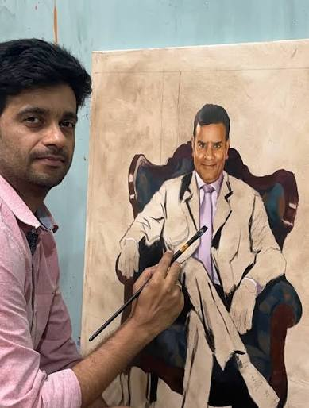

Creating a portrait requires patience, observation, and precision. Vilas Nayak carefully studies facial features, proportions, and expressions before drawing each line. Every portrait is created with great attention to detail, making it look natural and lifelike.
⬅ Previous Next ➜